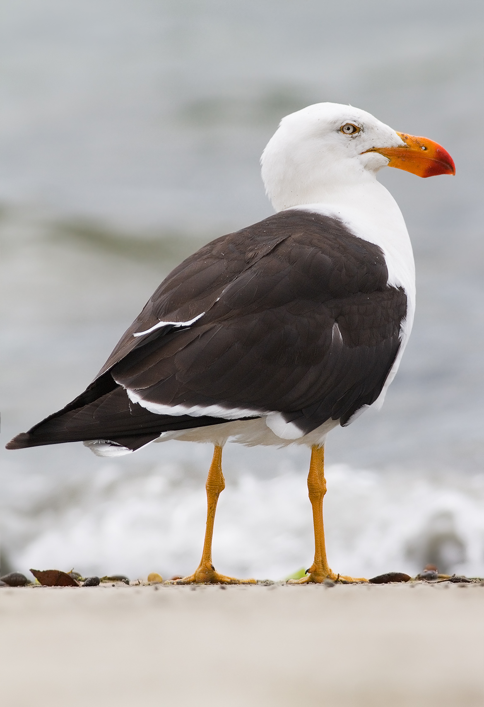

Larus pacificus
Pacific Gulls are the largest gulls in their range, the second largest are the occasional and introduced Kelp Gull. They can range in length from 58 to 66 cm (23 to 26 in) and span 137 to 157 cm (54 to 62 in) across the wings. They generally weigh about 900 to 1,180 g (1.98 to 2.60 lb).